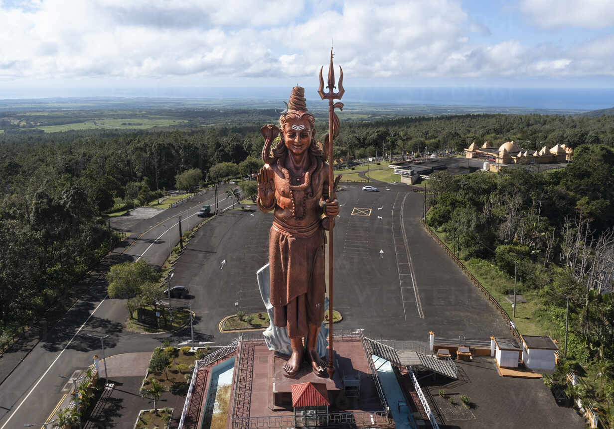
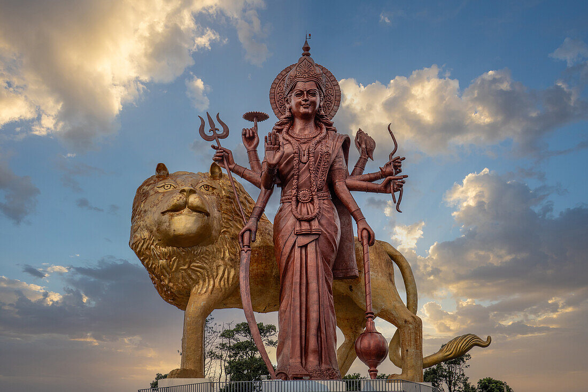
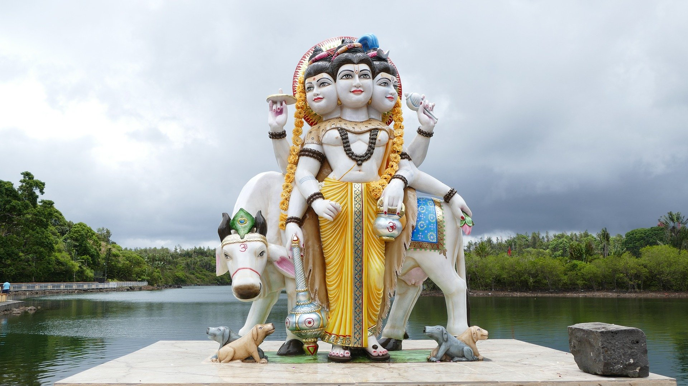
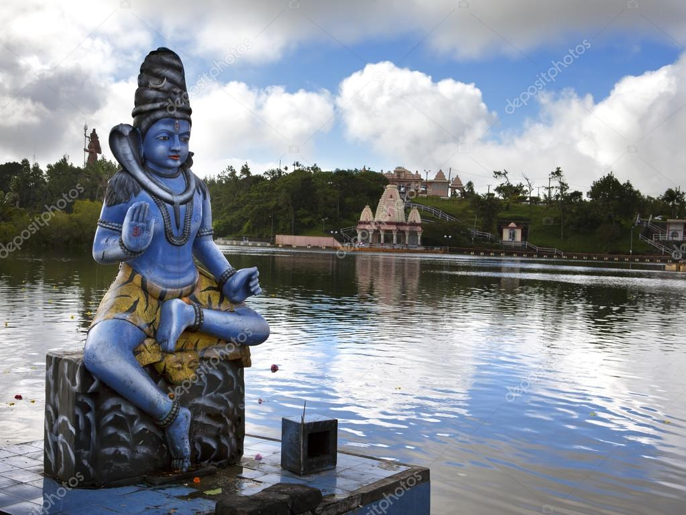
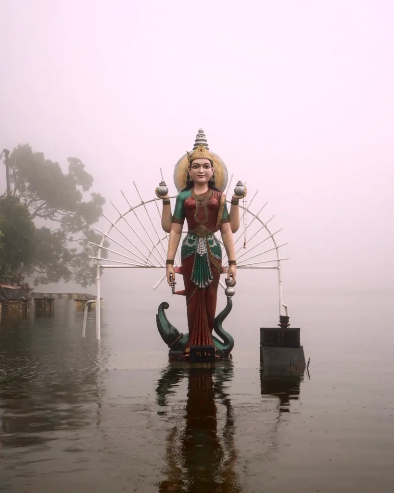

Ganga Talao – The Sacred Heart of Mauritius
Grand Bassin, also known as Ganga Talao, is a stunning crater lake nestled in the serene highlands of Mauritius. Renowned as one of the most sacred pilgrimage sites for Hindus outside of India, it holds immense spiritual and cultural significance. The lake is surrounded by a picturesque landscape of lush greenery, dense forests, and tranquil hills, providing visitors with a sense of peace and natural beauty. Around the lake, there are numerous ornate temples and shrines dedicated to various Hindu deities, most prominently Lord Shiva and Goddess Durga, whose grand statues dominate the scenery.
Famous Idols




